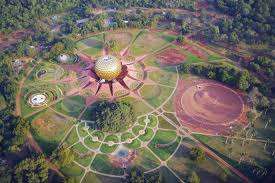
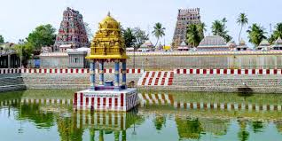
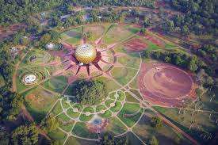
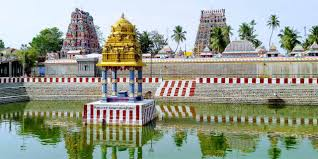
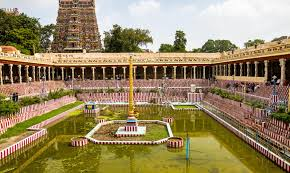
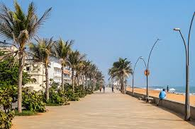
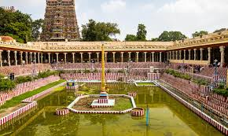
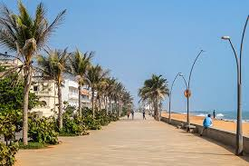

White Town
Yellow buildings, French-style lanes, cafes and boutique shops.
Pondicherry mixes Indian coastal life with French colonial heritage. The White Town area has pastel buildings, leafy boulevards, quiet cafes and a long seaside promenade. Beaches sit on both sides of the city, offering a simple, relaxing coastal escape.
Auroville is nearby—known for meditation, art, community living and handicraft stores. Many travellers combine Pondicherry with Mahabalipuram or Chennai for a balanced South India trip.
Yellow buildings, French-style lanes, cafes and boutique shops.
Sea-facing walkway perfect for sunrise and long evening strolls.
Matrimandir viewpoint, workshops, organic cafes and calm nature.
Clean, quiet beach reached by short boat ride from Chunnambar.
Colourful buildings, wall art, churches and waterfront views.
Calm forest area with cafes, handicrafts and the Matrimandir viewpoint.
Paradise Beach and Rock Beach are clean and scenic spots.
Good for slow weekend trips.
Short visit
Easy pace
3–4 days
Heritage hotels and boutique stays near promenade and cafes.
Best for first-time visitors.
Beach resorts and peaceful stays on the outskirts.
Good for relaxed holidays.
Nature stays, homestays and community-style living.
Perfect for slow, mindful trips.
 




 



Helpful habits for beaches and French quarter areas.